第 21 讲：理解 HTTP，手搓一个 API（5.3）
在前面两讲中，我们完成了 API 基础概念的建立，并在本地成功配置了 Python 隔离运行环境。但直到上一节为止，我们编写的代码（无论终端中的 curl 还是 Python 脚本中的 requests.get）始终站在调用方（Client / 客户端）的视角。
从本节开始，我们将发生根本性的视角转变——成为被调用方（Server / 服务端）。我们要编写一个守在服务器端口上的后端程序，等待外界发来请求并作出正确回应。
为了让服务端与形形色色的客户端顺畅交流，双方必须遵守同一套世界通用的网络对话规约——HTTP 协议（HyperText Transfer Protocol）。本节我们将通过理论剖析、curl -v 报文透视以及 Python 标准库原生“手搓”一个 API，彻底打通网络协议底层的任督二脉。
flowchart LR
subgraph ClientSide ["调用方 (Client)"]
Browser["Web 浏览器"]
TerminalCurl["curl 命令行"]
PythonReq["Python requests 脚本"]
end
subgraph HTTPTunnel ["HTTP 协议通道 (纯文本报文)"]
ReqMsg["HTTP 请求报文<br/>(方法 路径 协议 / 请求头 / 空行 / 请求体)"]
RespMsg["HTTP 响应报文<br/>(状态行 / 响应头 / 空行 / 响应体)"]
end
subgraph ServerSide ["被调用方 (Server)"]
ListenPort["监听 8000 端口"]
PythonHandler["Python http.server 处理逻辑"]
JSONData["业务数据 (JSON / HTML)"]
end
ClientSide -->|1. 发送 Request| ReqMsg
ReqMsg --> ListenPort
ListenPort --> PythonHandler
PythonHandler --> JSONData
JSONData --> PythonHandler
PythonHandler --> RespMsg
RespMsg -->|2. 返回 Response| ClientSide
1. 视角的转变：从调用方跨入被调用方
(参考时间: 01:15)
在软件工程中，任何一次网络交互都包含两个对等的角色： * 调用方（Client）：主动发起提问的一方。负责按照协议组装好请求内容并向目标服务器发送。 * 被调用方（Server）：被动守候应答的一方。在指定的网络端口上保持常驻监听，接收到请求后进行解析、处理，并组装响应报文送回。
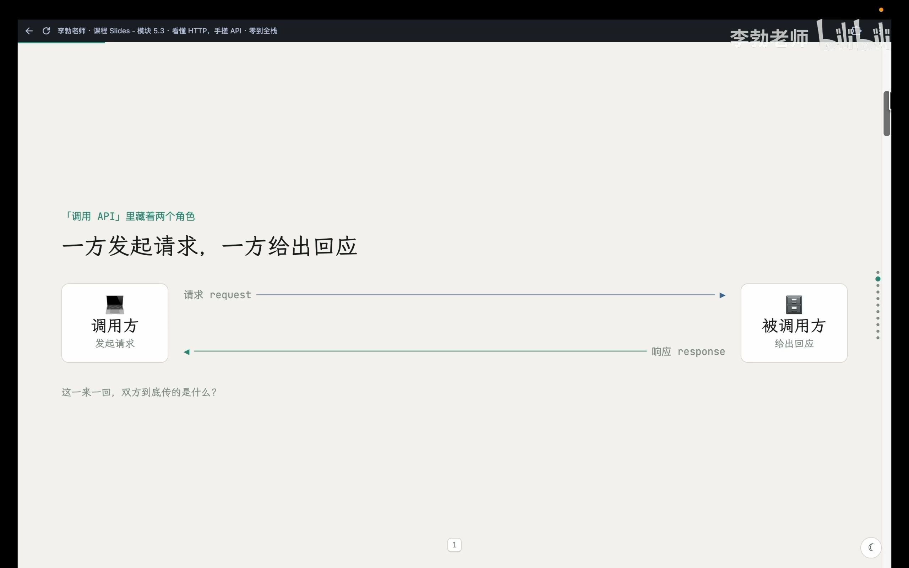
📷 本节核心大纲与前后两部分规划
在 B 站中打开 (00:00:45)
此前我们使用浏览器上网、使用 curl 探测 IP 或在终端调用 DeepSeek，各类客户端工具默默帮我们处理了复杂的协议细节，我们只需查看最终的返回内容。而作为服务端开发者，我们必须精确掌握协议规范中每一个字节的含义，否则任何格式错漏都会导致客户端无法解析。
2. 报文全貌：请求与响应的对称之美
(参考时间: 03:00)
HTTP 规定的一次完整网络对话，本质上就是一去一回两段格式固定的纯文本。发过去的那段叫请求（Request），回过来的那段叫响应（Response）。
两段报文在结构上具有高度严谨的对称性，均由严格的四个部分构成：
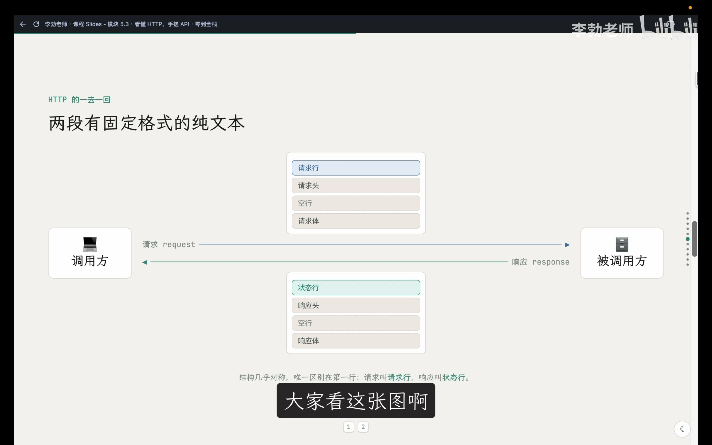
📷 HTTP 请求与响应的四段式对称结构图解
在 B 站中打开 (00:03:25)
classDiagram
class HTTP_Request {
+第1部分: 请求行 (Request Line: 方法 + 路径 + 协议版本)
+第2部分: 请求头 (Headers: 键值对元信息)
+第3部分: 空行 (CRLF 边界隔离符)
+第4部分: 请求体 (Body: 提交的有效载荷, 可选)
}
class HTTP_Response {
+第1部分: 状态行 (Status Line: 协议版本 + 状态码 + 说明短语)
+第2部分: 响应头 (Headers: 键值对元信息)
+第3部分: 空行 (CRLF 边界隔离符)
+第4部分: 响应体 (Body: 返回的数据正文, 如 JSON/HTML)
}
请求报文的四个部件
- 请求行（Request Line）：请求的第一行，交代三件事：
- 请求方法（Method）：表明意图（如
GET取数据、POST提交数据）； - 资源路径（Path）：指定访问服务器上的哪个资源（如
/或/api/home）； - 协议版本（HTTP Version）：如
HTTP/1.1。 - 请求头（Request Headers）：若干行
Key: Value键值对，用于补充说明请求者的身份、目标主机与偏好格式（如Host、User-Agent、Accept）。 - 空行（CRLF）：极其关键的分界线，明确告知服务器“头部元信息已结束，下方开始是正文数据”。
- 请求体（Request Body）：客户端提交给服务端的实际数据载荷（如 POST 表单或 JSON 内容）。
GET请求通常省略此部分。
响应报文的四个部件
- 状态行（Status Line）：响应的第一行，交代处理结果：
- 协议版本（如
HTTP/1.1）； - 状态码（Status Code）：三位数字，表示处理结果；
- 状态说明（Reason Phrase）：如
200 OK或404 Not Found。 - 响应头（Response Headers）：若干行
Key: Value，交代返回数据的元属性，其中最重要的莫过于Content-Type（指明响应体的数据格式）。 - 空行（CRLF）：分隔响应头与响应正文。
- 响应体（Response Body）：服务器真正交还给客户端的正文数据（如 HTML 源码或 JSON 字符串）。
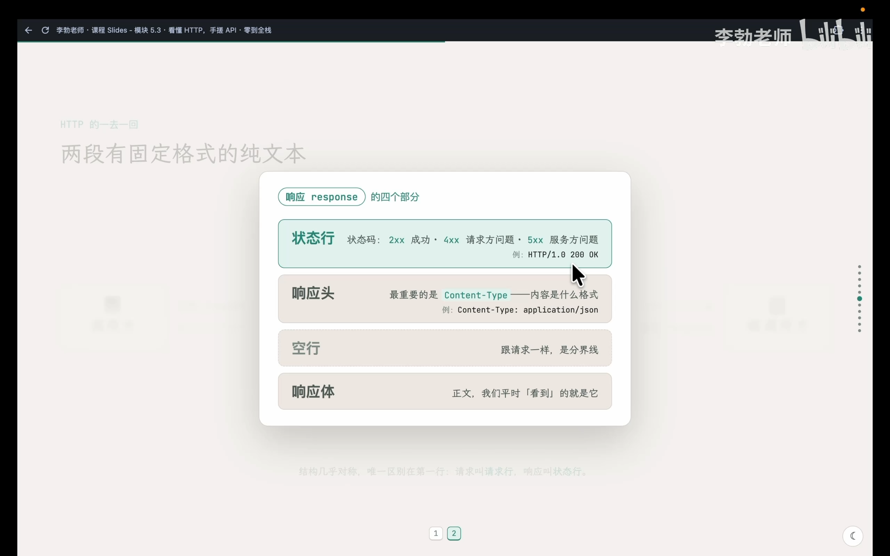
📷 HTTP 状态码规律与核心分类
在 B 站中打开 (00:06:05)
[!TIP] 状态码核心规律速查： *
2xx（如 200）：成功（Success）。 *3xx（如 301, 302）：重定向（Redirection），资源搬移至新路径。 *4xx（如 400, 404, 403）：客户端错误（Client Error）。请求本身存在问题（如找错路径或缺少参数）。 *5xx（如 500, 502）：服务端错误（Server Error）。服务端业务逻辑崩溃或代理挂起。
3. 报文透视：使用 curl -v 还原真实对话
(参考时间: 07:10)
平时我们在终端执行 curl，屏幕上只显示最终的响应体。在 curl 命令后添加 -v（verbose / 详细模式） 参数，curl 就会将握手与两段纯文本报文全过程完整打印出来。
curl -v https://api.ipify.org?format=json
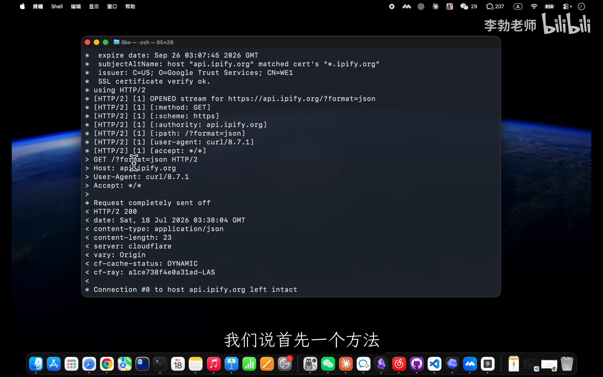
📷 curl -v 执行时打印出的详细网络对话过程
在 B 站中打开 (00:08:50)
读懂终端中的三类行首标记
- 星号
*开头：curl的底层旁白与网络连接事件（DNS 解析、TCP 三次握手、TLS 加密握手等），非 HTTP 报文内容。 - 大于号
>开头：发往服务端的真实请求报文原文。清晰包含请求行（GET /?format=json HTTP/1.1）以及请求头（Host,User-Agent,Accept）。 - 小于号
<开头：服务端返还的真实响应报文原文。清晰包含状态行（HTTP/1.1 200 OK）以及各类响应头（content-type: application/json等）。
对比带请求体的 POST 报文
当我们使用 curl 调用 DeepSeek 接口时：
curl -v https://api.deepseek.com/chat/completions \
-H "Content-Type: application/json" \
-H "Authorization: Bearer YOUR_API_KEY" \
-d '{"model":"deepseek-chat","messages":[{"role":"user","content":"Hello"}]}'
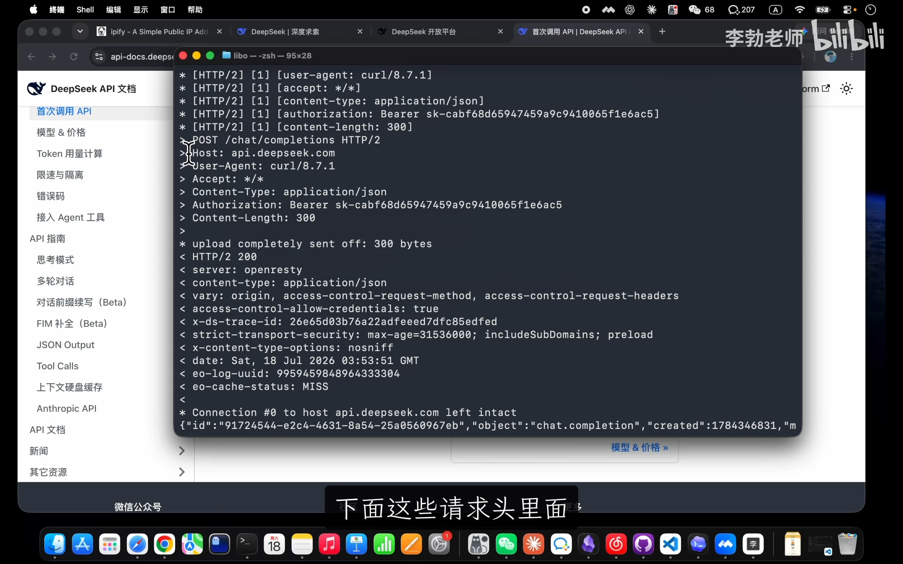
📷 curl -v POST 请求 DeepSeek 时的完整报文输出
在 B 站中打开 (00:12:05)
在请求段中，原本的 GET 变为了 POST，由 -H 传入的参数原样转化为 HTTP 请求头。而通过 -d 传递的 JSON 字符串则作为请求体发送给后端。
4. HTTP 方法的本质：意图而非数据流向
(参考时间: 13:40)
许多初学者常常产生误解：“GET 是从服务器往回拉数据，POST 是往外推数据”。这种理解存在根本性的认知偏差。
[!IMPORTANT] HTTP Method 描述的不是数据的物理流动方向，而是客户端发起请求的“业务意图”。 * 在调用 DeepSeek 的例子中，我们虽然推上去了 Prompt，但也接收到了几千字的 AI 回复； *
GET的意图是“请将该资源呈现给我”（安全、幂等，通常无请求体）； *POST的意图是“我提交了一份内容，请服务端进行处理/持久化”（通常包含请求体）。
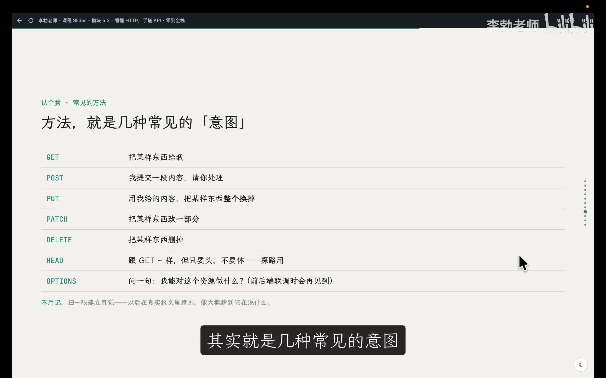
📷 HTTP 常见请求方法与业务意图映射表
在 B 站中打开 (00:15:35)
| 请求方法 | 核心业务意图 (Semantic Intent) | 是否通常包含请求体 |
|---|---|---|
| GET | 获取指定资源的当前表示 | 否 |
| POST | 向服务端提交数据，请求进行处理或创建新资源 | 是 |
| PUT | 使用请求体的内容完整替换目标资源 | 是 |
| PATCH | 对目标资源进行局部微调更新 | 是 |
| DELETE | 删除指定的远程资源 | 否 |
| HEAD | 与 GET 行为完全一致，但不返回响应体（仅探测响应头） | 否 |
| OPTIONS | 查询目标资源支持的通信方法（跨域预检常用） | 否 |
5. 核心头字段与服务端必做清单
(参考时间: 16:10)
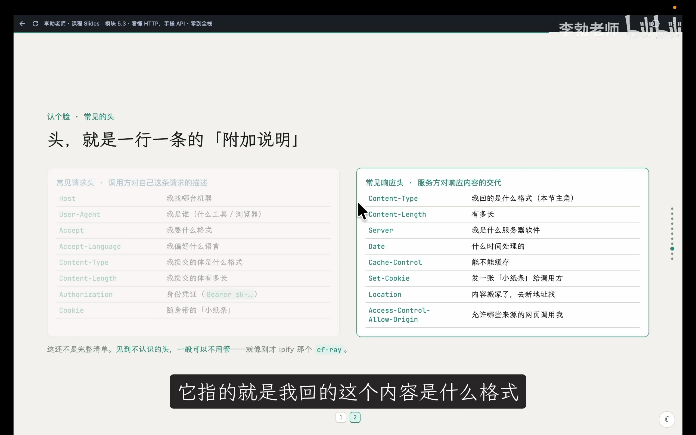
📷 常见 HTTP 请求头与响应头速查表
在 B 站中打开 (00:17:15)
面对如此繁琐的 HTTP 规约，作为一名服务端编写者，哪些是必须处理的硬性指标？
flowchart TD
subgraph MustHandle ["服务端必须实现的核心规范 (缺一不可)"]
M1["1. 解析请求行 (识别 Method 与 Path)"]
M2["2. 写入状态行 (必须包含 HTTP 状态码, 如 200/404)"]
M3["3. 写入 Content-Type (声明响应体的格式)"]
M4["4. 输出空行 (声明 Headers 结束, 区分正文)"]
M5["5. 写入响应体 (业务 JSON 字符串)"]
end
- 必须读取请求方法与路径：如果不判断路径与方法，就无法区分来访者要访问哪个接口；
- 必须写回状态行（状态码）：没有状态码的报文不符合协议，客户端会直接抛出协议错误；
- 必须写入
Content-Type响应头：告知客户端响应体的编码与数据形态（如application/json）； - 必须写入空行：划分头部与数据正文的界线；
- 按需写入响应体：组装客户端所需的数据。
6. 原生手搓：用 Python 实现你的第一个 API
(参考时间: 21:00)
理解了底层规范后，我们无需安装任何第三方大型框架，直接利用 Python 内置的标准库 http.server 来亲手编写符合 HTTP 规范的服务端代码。
在 zero-to-tech/backend/ 目录下创建 main.py：
from http.server import BaseHTTPRequestHandler, HTTPServer
import json
# 模拟从前端 data.js 拆分出来的个人资料数据
profile = {
"heroTitle": "关于我",
"heroSubtitle": "项目, 创意, 灵感, 心得, 我的作品",
}
class Handler(BaseHTTPRequestHandler):
def do_GET(self):
# 1. 读取并判断请求路径
if self.path == "/api/profile":
# 2. 写入状态行 (200 OK)
self.send_response(200)
# 3. 写入响应头
self.send_header("Content-Type", "application/json")
# 4. 写入空行 (Header 结束界限)
self.end_headers()
# 5. 组装并写入响应体 (ensure_ascii=False 保证中文字符原生输出)
body = json.dumps(profile, ensure_ascii=False)
self.wfile.write(body.encode("utf-8"))
else:
# 路径不匹配时返回 404
self.send_response(404)
self.end_headers()
print("后端已启动: http://localhost:8000/api/profile")
HTTPServer(("", 8000), Handler).serve_forever()
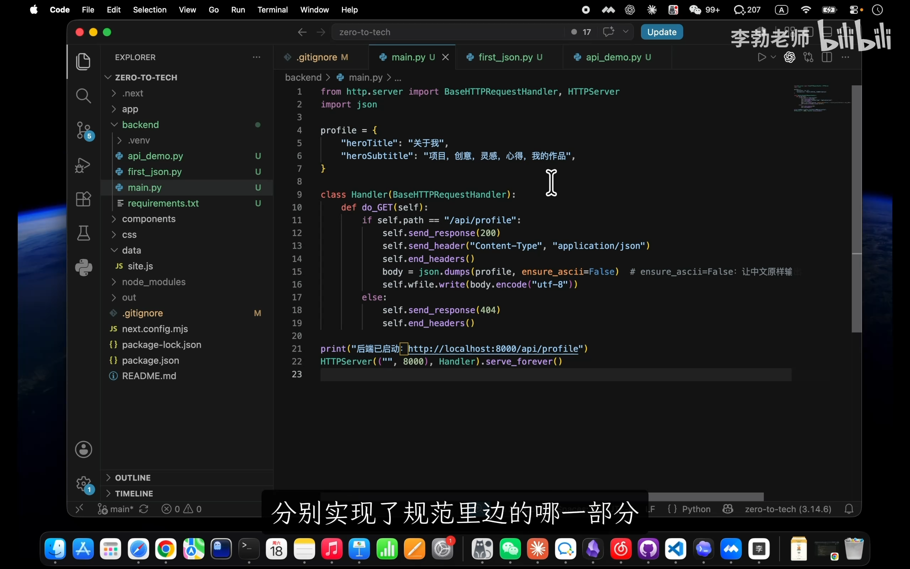
📷 main.py 代码实现与 HTTP 规范逐行对应讲解
在 B 站中打开 (00:23:25)
代码关键点解析
BaseHTTPRequestHandler：Python 标准库中处理 HTTP 请求的基类。定义do_GET即代表专门拦截所有的GET请求。self.send_response(200)：负责向 TCP 通道写入状态行HTTP/1.0 200 OK。self.send_header("Content-Type", "application/json")：生成数据格式说明头。self.end_headers()：关键指令，自动输出一个由\r\n构成的纯空行，标识头部的结束。self.wfile.write(...)：wfile是一个底层的可写二进制流（Write File），必须将字符串通过.encode("utf-8")转换为字节才能网络传输。HTTPServer(("", 8000), Handler).serve_forever()：开启死循环监听 8000 端口。
启动与接口调用
在激活虚拟环境的终端中执行启动命令：
python3 main.py
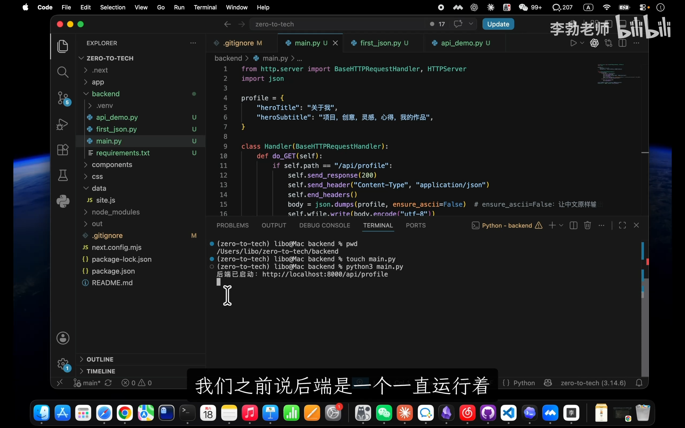
📷 终端运行后常驻监听 8000 端口
在 B 站中打开 (00:26:00)
终端输出提示后光标停留在新行等待。保持该终端不动，打开另一个终端窗口或直接在浏览器中访问：
curl http://localhost:8000/api/profile
终端与浏览器均能成功获得标准的 JSON 字符串返回：
{"heroTitle": "关于我", "heroSubtitle": "项目, 创意, 灵感, 心得, 我的作品"}
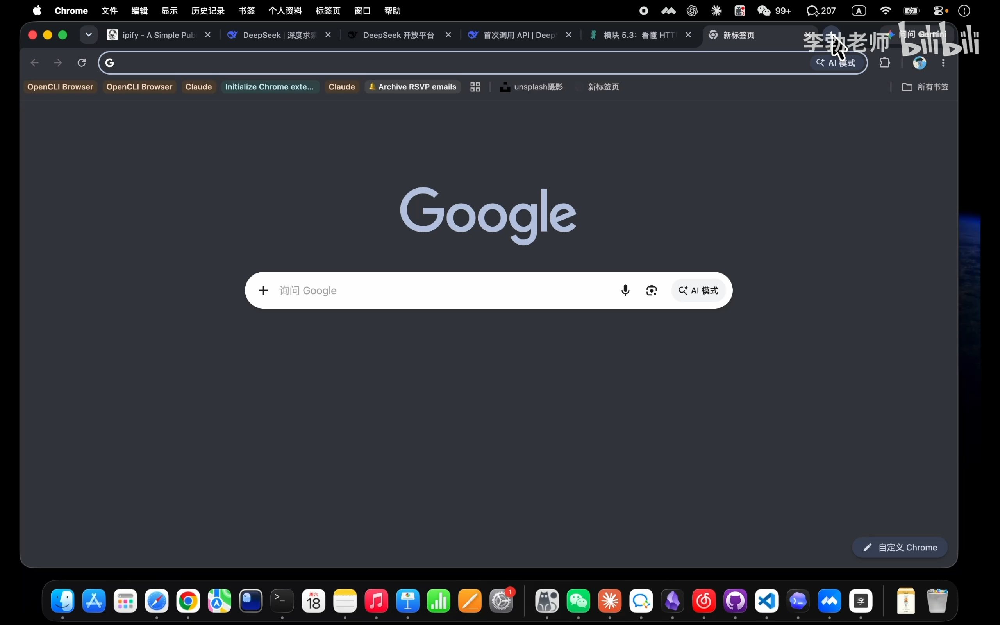
📷 通过 curl 与浏览器双重调用验证 API 成功
在 B 站中打开 (00:27:00)
同时，服务端的控制台终端打印出了实时的访问日志：
127.0.0.1 - - [15/Sep/2026 10:15:32] "GET /api/profile HTTP/1.1" 200 -
127.0.0.1 - - [15/Sep/2026 10:15:33] "GET /favicon.ico HTTP/1.1" 404 -
[!NOTE] 浏览器访问时会自动触发一条对
/favicon.ico（标签页小图标）的额外请求。由于我们在代码中仅对/作了匹配，因此该请求命中else分支并正确返回了404状态码。
7. 深度实验一：Content-Type 与字符集的降维打击
(参考时间: 33:00)
为了直观验证 Content-Type 响应头的绝对支配力，我们在 do_GET 中追加一个路由分支测试：
elif self.path == "/hello":
self.send_response(200)
self.send_header("Content-Type", "text/html; charset=utf-8")
self.end_headers()
self.wfile.write("<h1>你好，HTTP！</h1>".encode("utf-8"))
踩坑与乱码：字符集的作用
如果仅声明 text/html 而未显式声明 charset=utf-8，部分浏览器会按照操作系统的本地默认编码（如 Windows 下的 GBK 或 ISO-8859-1）尝试解析中文字符，导致网页出现中文乱码：
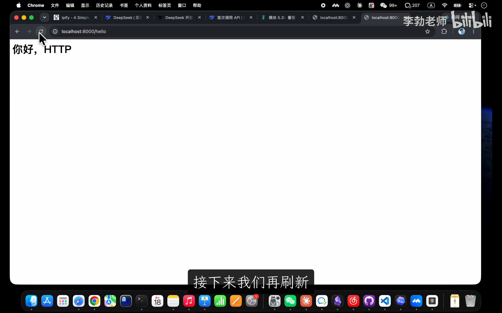
📷 缺少 charset 声明导致浏览器渲染中文乱码
在 B 站中打开 (00:34:25)
补全 ; charset=utf-8 后刷新，浏览器便能正常呈现大号字体的 HTML 标题。
格式切换：网页与 API 的本质同一性
如果我们保持返回内容不变，仅仅将响应头修改为纯文本：
self.send_header("Content-Type", "text/plain")
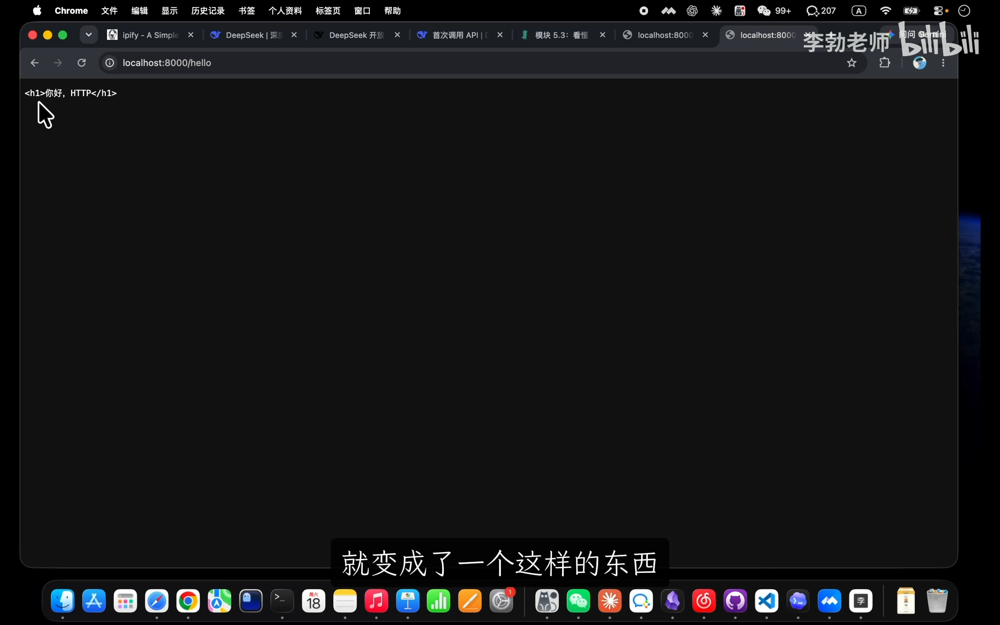
📷 将 Content-Type 改为 text/plain 后的纯文本渲染效果
在 B 站中打开 (00:35:05)
此时浏览器将不再解析 <h1> 标签，而是将其作为原始字符串逐字打印在屏幕上。
[!IMPORTANT] 在现代网络世界里，网页与 API 没有本质区别。它们底色上都是完全一致的 HTTP 交互报文。所谓做 API，不过是在
Content-Type中选择告知客户端这是application/json还是text/html。
8. 深度实验二：服务端眼中的世界与元信息透视
(参考时间: 36:30)
在 do_GET 头部增加两行日志打印：
print("客户端请求头:\n", self.headers)
print("客户端真实 IP 地址:", self.client_address[0])
使用 curl 与浏览器分别请求服务，服务端的控制台展现出了截然不同的信息世界：
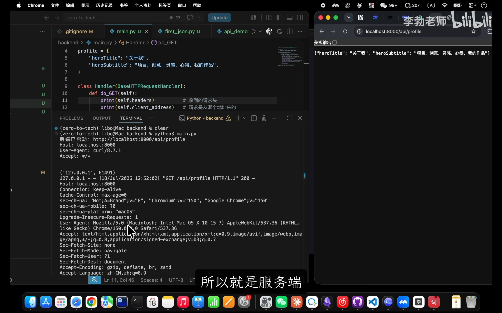
📷 服务端打印出终端与浏览器请求时的海量元信息差异
在 B 站中打开 (00:38:30)
- 客户端完全透明：
curl只上报简短的工具版本信息，而现代浏览器则会带上数十行请求头，包括操作系统版本、屏幕渲染引擎（User-Agent）、可接收的压缩算法（Accept-Encoding）等。 - 元信息的工程价值：服务端正是利用这些元信息实现客户端设备统计、基于 IP 的风控防刷、以及根据
Accept-Language自动呈现中文或英文界面的国际化能力。
避坑与安全：协议伪装
在浏览器开发者工具（F12）的 Network 面板中，对任意网络请求右键选择 Copy as cURL，即可直接复制出浏览器触发该请求时的所有请求头：
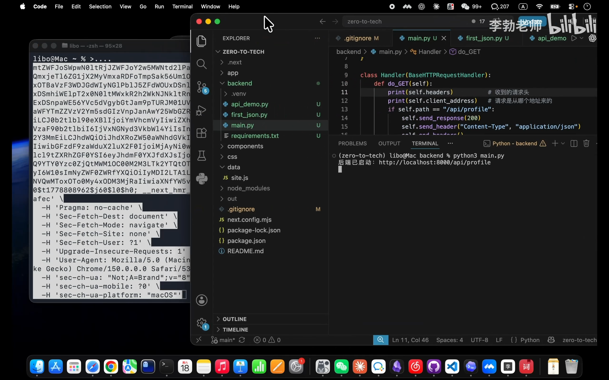
📷 在浏览器网络面板中右键 Copy as cURL
在 B 站中打开 (00:41:20)
粘贴到终端执行时，服务端将毫无保留地认为这次请求来自于真正的 Google Chrome 浏览器。这也提醒我们：HTTP 头部是完全由客户端自由组装的纯文本，绝不可无条件信任未签名的请求头作为唯一安全凭证。
9. 为什么现实开发不能一直“手搓”？
(参考时间: 42:30)
在完成实验并验证逻辑后，我们在 Git 中提交本次里程碑：
# 清理第 20 讲中的临时演示脚本
rm first_json.py api_demo.py
# 提交干净的手搓 API 代码
git add main.py
git commit -m "feat: 手搓一个基础 HTTP API"
从手搓到框架（Framework）的必然演进
通过亲手编写这几十行代码，我们切身体会到了编写一个原生 API 的繁重工作量：
1. 每个路由都要手写 if...elif...else 进行字符串比对；
2. 必须手动管理 send_response、send_header 以及易错的 end_headers 空行；
3. 如果接口需要接收 POST 数据，还需要手动计算 Content-Length 并进行流式读取和字段校验；
4. 真实大型工程拥有上百个接口，手搓原生代码将陷入无尽的防御性重复造轮子中。
这些与业务无关、人人皆需遵循的 HTTP 规范底层繁琐杂活，催生了专门的工程利器——Web 框架（Web Framework）。
下一节中，现代 Python 生态中最著名的高性能异步后端框架 FastAPI 将正式登场。我们将见证几十行原生杂活如何在框架的优雅封装下，化繁为简为短短几行优雅代码。